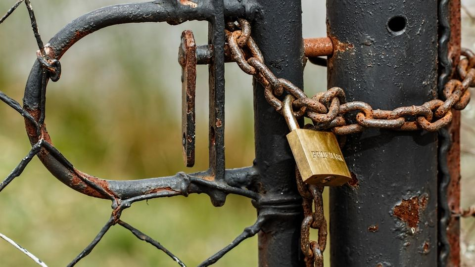

スマートフォンでSNSを見ていると、有名人の写真とともに「投資で資産が増えた」「無料で投資を教えます」といった広告が目に入ることがあります。
仕事や家事の合間に見て、「少しだけなら」「話を聞くだけなら」と思うのは、ごく自然なことです。
ただ、こうした誘いの中には、最初から相手のお金をだまし取ることが目的のものもあります。
この記事では、消費者庁・国民生活センター・金融庁・警察などが公開している注意喚起の内容をもとに、投資詐欺のよくある流れ、見分け方、払ってしまったときの動き方を順番にまとめます。
SNS型の投資詐欺とは｜よくある流れ
SNSの広告やメッセージから始まる投資詐欺は、少しずつ信用させてからお金を払わせる流れが多いとされています。よく案内されている流れは次のとおりです。
- SNSの広告やメッセージで接触：有名人や専門家を名乗る広告、または知らない人からの親しげなメッセージから始まります
- LINEなど別のアプリへ誘導：「詳しくはこちらで」と、LINEのグループや個別のやり取りに移るよう促されます
- 仲間がいるように見せる：グループには「利益が出た」と喜ぶ参加者がいて、自分も参加しないと損をするような雰囲気がつくられます
- 指定のアプリやサイトで入金させる：専用のアプリや投資サイトを案内され、個人名義の口座などへ振り込むよう言われます
- 画面上だけ利益が出たように見せる：サイトの画面では残高が増えているように見え、さらに入金を勧められます
- 出金しようとすると追加の支払いを求める：「手数料」「税金」「保証金」などの名目でお金を求められ、払っても出金できないまま連絡が取れなくなります
また、SNSやマッチングアプリで知り合った相手と親しくなったあとに投資を勧められる、恋愛感情や信頼を利用した手口も注意が呼びかけられています。
こんな言葉・誘い方が出たら要注意

注意
- 「必ず儲かる」「元本保証」：投資には損をする可能性があり、利益を約束する話はそれだけで危険なサインです
- 「今だけ」「あなただけ」：急がせるのは、考えたり人に相談したりする時間をなくすためです
- 個人名義の口座への振込：正規の業者が、投資のお金を個人名義の口座に振り込ませることは通常考えにくいとされています
- 出金のための追加の支払い：「手数料」「税金」を先に払えば出金できる、という話が出たら、それ以上払わないことが大切です
- 「人に話さないで」：家族や友人に相談させないよう求めるのも、よく見られる特徴です
注意
少しでも「おかしい」と感じたら、お金を払う前・個人情報を伝える前に、いったん手を止めて相談してください。止まることは失礼でも損でもありません。
見分け方｜お金を払う前に確認すること
1. 金融庁の登録業者かどうか
日本で投資の勧誘や取引をする業者は、原則として金融庁や財務局への登録が必要です。
金融庁の公式サイトにある「免許・許可・登録等を受けている業者一覧」で、相手の会社名と登録番号を確かめることが、案内されている基本の確認方法です。
あわせて、金融庁が公表している無登録で金融商品取引業を行う者への警告の情報も確認できます。ただし、名前だけ登録業者に似せている場合もあるため、連絡先やサイトのアドレスが登録先と一致しているかも見ておくと安心です。
2. 有名人・専門家の名前が本物かどうか
広告やメッセージに有名人の名前や写真が使われていても、本人とは関係がないことがあります。
本人や所属先の公式サイト・公式アカウントで、そのような投資の募集をしているかを確かめます。広告に書かれた連絡先やリンクからではなく、自分で検索した公式の情報で確認するのがポイントです。
3. お金の流れが自然かどうか
振込先が個人名義になっていないか、出金のたびに新しい支払いを求められていないかを確認します。
「いま払えば取り戻せる」と言われると焦りが生まれますが、追加の支払いで状況がよくなることは考えにくいとされています。迷ったら、その場で返事をせずに相談してください。
もし払ってしまった・連絡してしまったら
払ってしまったと気づいたときは、自分を責めるより先に、次のことを落ち着いて進めます。
- これ以上払わない：「取り戻すための手数料」などを求められても応じないようにします
- 記録を残す：やり取りの画面、相手のアカウント名、サイトのアドレス、振込の記録などを、消さずに保存します。スクリーンショットも役に立ちます
- 振込先の金融機関に連絡する：振り込んだ自分の銀行と、振込先の銀行に早めに連絡し、事情を伝えます
- 公的な窓口に相談する：警察の相談窓口や消費生活センターなどに相談します
ポイント
被害を取り戻すと持ちかける別の業者や「回収代行」をうたう連絡にも注意が呼びかけられています。相談先は、自分で調べた公的な窓口を選ぶと安心です。
家族・身近な人を守るために
投資詐欺は、年齢に関係なく誰にでも届く可能性があります。今日できることとして、次のようなことを家族で話しておくのがおすすめです。
- 「投資の話が来たら一度見せてね」と伝えておく：責めない約束をしておくと、相談しやすくなります
- お金を払う前に家族へ連絡するルールを決める：特に振込や暗号資産の送金の前は、一度連絡を入れると決めておきます
- 知らない人から移ったLINEには気をつける：SNSで知り合った相手からアプリを移るよう言われたら、まず立ち止まる合図にします
よくある質問
少額ならだまされても大丈夫と思って試してもよいですか？
最初は少額で利益が出たように見せ、その後に大きな入金を求める流れがよく知られています。少額でも、相手が登録業者か分からないうちは払わないことをおすすめします。
画面上では利益が出ています。出金できれば問題ないのでは？
画面の数字は相手が自由に表示できるため、実際にお金があるとは限りません。出金のために追加の支払いを求められたら、払う前に相談してください。
相手が本物かどうか、自分では判断がつきません。
判断がつかないのは珍しいことではありません。金融庁の金融サービス利用者相談室や、消費者ホットライン「188」、警察相談専用電話「#9110」など、公的な窓口に相談すると、状況に応じた案内を受けられます。
まとめ
この記事のポイント
- SNS広告やメッセージから別のアプリに誘い、少しずつ入金させる流れには注意する
- 「必ず儲かる」「今だけ」「個人名義の口座」「出金のための手数料」は危険なサイン
- 払う前に、金融庁の登録業者一覧と、有名人本人の公式情報で確かめる
だまされる人が悪いわけではありません。少しでも怪しいと思ったら、お金を払う前に、家族や公的な窓口に相談してください。
困ったとき・迷ったときの相談先
- 消費者ホットライン「188」：お近くの消費生活センターなどにつながります（契約・勧誘のトラブル全般）
- 警察相談専用電話「#9110」：詐欺かもしれない、脅されている、など緊急ではない相談。今まさに被害にあっている・危険が迫っているときは 110 番へ
- 金融庁：無登録の業者か確かめたいとき、投資の勧誘で困ったときは金融庁の公式サイトの相談窓口へ
- 国民生活センター：最新の手口や相談事例は国民生活センターの公式サイトで確認できます
お金を払う前、個人情報を伝える前に、ひとりで決めずに相談してください。